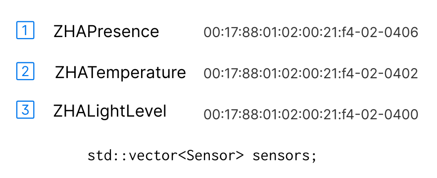
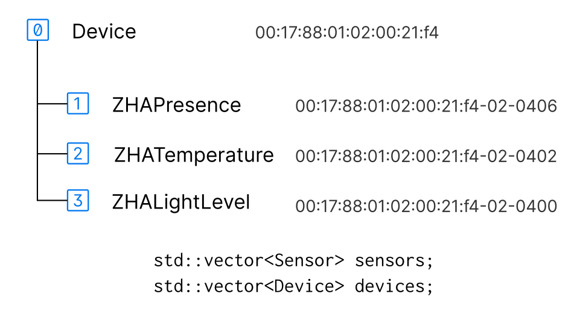

Device class¶
Work in Progress
The Device class manages a single physical device. It controls sub-devices like sensors and lights soley by using their Resource and ResourceItem interface.
C++ sources: device.h and device.cpp
Overview¶
The difference to classic C++ plugin code is best described by an example. The next sections show how a Philips Hue Motion Sensor is handled by classic C++ code vs. the new Device code.
Classic C++ code¶
A Philips Hue Motion Sensor with model identifier “SML001” has three Sensor objects.

Pairing: The sensors are created and configured by:
addSensorNode(const deCONZ::Node *node, const deCONZ::NodeEvent *event);
addSensorNode(const deCONZ::Node *node,
const SensorFingerprint &fingerPrint,
const QString &type, const QString &modelId,
const QString &manufacturer);
delayedFastEnddeviceProbe(const deCONZ::NodeEvent *event);
checkSensorBindingsForAttributeReporting(Sensor *sensor);
Operaration: Once configured, messages from the sensor are processed in:
updateSensorNode(const deCONZ::NodeEvent &event);
Problems
- The mentioned functions are huge, e.g.
updateSensorNode()is over 1700 lines long - Some parts of the code specifically handle “SML00” modelid
- There is little error handling and pairing might fail
Device code¶
The new code creates the same three sensors, but doesn’t use any of the above functions.
The first notable thing is a hierarchy:

The Device object acts as a controller for the sensors (sub-devices).
Note: That Sensor and LightNode classes inherit from the Resource class. This makes them accessible to the Device class.
Pairing: Is done by the per device state machine which:
- Reads all ZDP descriptors
- Reads ZCL Basic Cluster modelid and manufacturer name
- Passes this data to the DDF Loader class
(which creates the three sensors based on a DDF file) - Configures all Bindings and ZCL attribute reporting which are defined in the DDF file
- Reads and writes ZCL attributes defined in the DDF file
Remarks
- The described steps are the same for all devices
- The state machine handles all errors or faults quickly
- The involved C++ code knows nothing about a specific device, this is all described in the DDF file.
The Device class isn’t aware about sleeping end-devices or routers, the knowledge that a device is able to receive commands comes from Awake and Poll Events which are generated by external classes and command handlers.
State Machine¶
Each Device is driven by its own internal state machine.
The states are implemented as a functions that act on events. The Device::handleEvent(Event) method passes the events to the current state, which is internally a function pointer to one of the following state functions:
void DEV_InitStateHandler(Device *device, const Event &event);
void DEV_IdleStateHandler(Device *device, const Event &event);
void DEV_NodeDescriptorStateHandler(Device *device, const Event &event);
void DEV_ActiveEndpointsStateHandler(Device *device, const Event &event);
void DEV_SimpleDescriptorStateHandler(Device *device, const Event &event);
void DEV_BasicClusterStateHandler(Device *device, const Event &event);
void DEV_GetDeviceDescriptionHandler(Device *device, const Event &event);
void DEV_BindingHandler(Device *device, const Event &event);
void DEV_BindingTableVerifyHandler(Device *device, const Event &event);
void DEV_PollIdleStateHandler(Device *device, const Event &event);
void DEV_PollNextStateHandler(Device *device, const Event &event);
void DEV_PollBusyStateHandler(Device *device, const Event &event);
High Level View¶
The following diagram shows the general flow of the state machine. Once the basic setup is done after the Get DDF state, the device enters the Operating/Idle State which runs multiple sub states in parallel.

If an error happens the state machine jumps back to the Init State and retries naturally.
Diagram source: device_bindings.puml
Timing¶
Other than internal timeouts the timing of the state machine is controlled by events send from the DeviceTick class (see device_tick.h).
Error handling¶
The following diagram shows how error handling for ZDP Requests is done in the DEV_NodeDescriptorStateHandler() state function, the same principle applies for Active Endpoints and Simple Descriptors states.

Diagram source: device_state_node_descriptor.puml
Bindings¶
ZDP binding and ZCL reporting configuration is maintained during the full life cycle of the device by the Binding sub state. If any error or fault happens the state machine recovers automatically and verifies the configuration.
In contrast to classic REST-API C++ code the state machine also detects changes in reporting configuration and is able to apply those.
Each device has it’s own copy of binding and ZCL reporting configuration which allows us later to provide custom configuration on a per device base.
Discussion in issues/6
The configuration for bindings and ZCL reporting is specified in DDF files, for example: ikea/gu10_ws_400lm_light.json.

Diagram source: device_bindings.puml
Sub-devices¶
The Device class only queries ZDP descriptors and the ZCL Basic Cluster attributes modelid and manufacturer name. After that DDF files are used to create sub-devices like sensors and lights.
Sub-devices are created by the DDF Loader, not the Device class itself.
-
When the Get DDF state is entered the Device sends the
REventDDFInitRequestevent and waits. -
The DDF Loader sends a
REventDDFInitResponseevent, at that time all sub deviceResourcesandResourceItemsare initialized and theDeviceclass goes into Operational/Idle state.

The Device Compat (compatibility) module creates empty Sensor and LightNode objects and adds them to the respective plugin sensors and nodes containers. The DDF Init module then fills the ResourceItems based on the DDF file and registers the Resource in the Device.
This way the “old” code as well as the Device can work side by side, albeit the Device doesn’t know anything about this.
This process can be repeated at any time, for example during development of DDF files they can be reloaded on-the-fly without restarting deCONZ.
Testing¶
Beside loose coupling, the minimal dependencies allow easier testing of the class and its behaviour of the state machine. In general all Device code is kept small and has no functions longer than two screen pages (if it does it is a bug). The goal is to get close to 100% test coverage, since internally mostly free standing functions are used this becomes straight forward. Each state and sub states can be tested in isolation as well as complete sequences like device pairing.
First steps to test the Device class behaviour can be found in 001-device-1.cpp.
Dependencies¶
The class depends only on a few other classes and modules.
Resourceas base class and to access sub devicesEventto interact with other components and provide lose couplingdeCONZ::Nodeto access ZDP Simple Descriptors and Node Descriptor- Device Access (DA) module to execute abstract named C++ parse, read and write functions
(Examples: IKEA KADRILJ DDF and state/on item) - ZDP module to query ZDP descriptors during setup;
- ZCL module to query ZCL Basic Cluster attributes during setup.

Note
There are no dependencies to DeRestPlugin, RestNodeBase, Sensor or LightNode classes, even deCONZ::ApsController is just an opaque pointer.
All the class sees, is a device which has sub-devices as Resource and their ResourceItems.